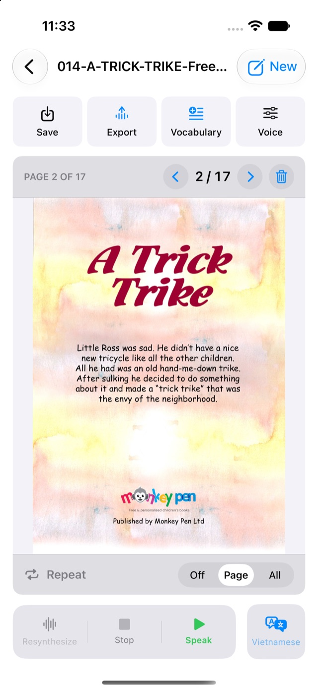
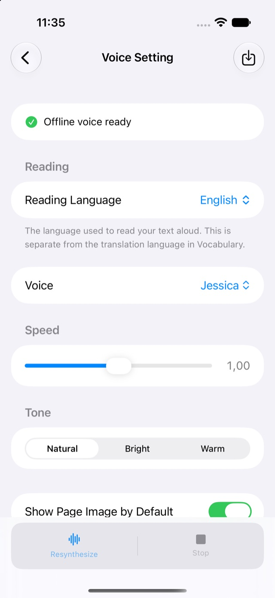
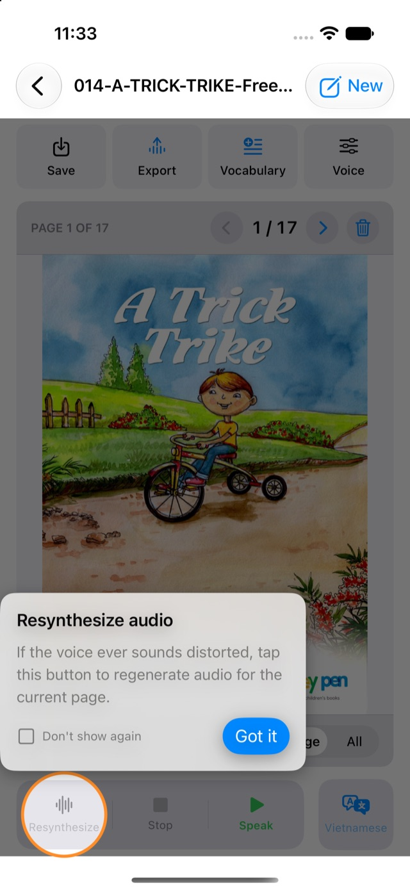
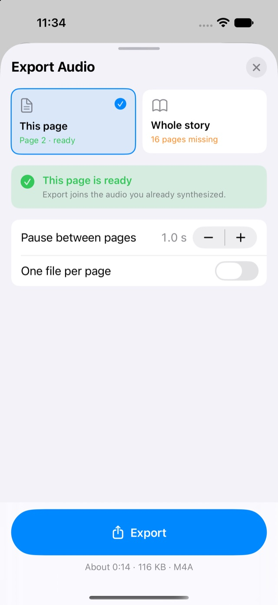

Listen
Turn any text into something you can listen to.
Your reading list, your voice. Bring in the material you care about and let the app read it aloud — page by page, with the original page image or clean text.
- PDF and image import with on-device OCR, so scanned pages and photos become readable text.
- Your library keeps every document with its cover, page count and date — reopen any time.
- Automatic language detection for each document, with an easy way to change it.
- Edit before you listen — fix a scan error or delete a garbled page.


Natural voice
A natural voice that works with no internet.
Speech is generated on your device by an on-device neural voice model — no cloud, no per-minute fees, no waiting on a server.
- Dozens of offline voices in English and Chinese (Simplified).
- Speed from 0.6× to 1.4× and three tones — Natural, Bright and Warm.
- Hear a preview instantly when you change a setting.
- Resynthesize any page, or just the chunks that sound wrong, with one tap.


Take it with you · Pro Yearly
Export your reading as an audio file.
Turn a page or a whole story into audio you can play anywhere — on a commute, at the gym, or offline on a flight.
- This page or the whole story, merged into one file.
- One file per page as a zip, if you prefer chapters.
- Adjustable pause between pages for a natural flow.
- Clear status shows exactly which pages are ready and which still need synthesizing.
- Included with Pro Yearly. Audio export is unlocked by the Yearly plan; everything else in Pro works on Monthly too.
